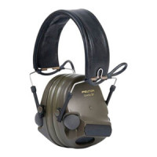

Активні навушники – захисний аксесуар, не менш потрібний сучасному солдату за якісний бронежилет чи балістичні окуляри. При потужних вистрілах та вибухах утворюється звукова хвиля, яка може пошкодити барабанні перетинки людини. 120 дБ – рівень больових відчуттів, а шум від вибуху у 160 дБ може призвести до контузії або розриву барабанної перетинки. Світло-шумова граната вибухає зі звуком 170 дБ. Тож щоб зберегти слух, необхідно використовувати балістичний захист у вигляді навушників, берушей.

Захист органів слуху
Пасивні та активні навушники для стрільби
Найпростіший варіант – так звані пасивні навушники. Вони не дають постраждати вухам шляхом чисто механічного утворення бар'єра. Вони прості, але мають ряд недоліків: глушать решту звуків, їх не можна налаштувати під себе. Саме тому були створені активні навушники. Це не просто накладки, а складні електронні механізми. Активні навушники для стрільби мають два динаміки, направлені назовні та всередину, і перетворювач звуку. Завдяки цьому активні навушники приглушають надто гучні звуки – як правило, понад 85 дБ, - які можуть зашкодити. Це називається порогом приглушення звуку. Одночасно акустичні навушники підсилюють надто тихі звуки, менш як 18-40 дБ, - ця характеристика називається акустична ефективність. Це дозволяє повністю захиститися від гуркоту та водночас чути усі звуки та орієнтуватися у просторі. Затримка у сучасних моделях становить усього від 0,6 до 0,1 секунди, тобто майже непомітно для стрілка. Дуже корисними є активні навушники для полювання, також популярні активні навушники військові. Останні, як правило, мають низький профіль, щоб не заважати прицілюватися. Активні навушники військові купити можна за відносно невелику суму, цілком пристойні моделі коштують не більше 100 доларів.
Навушники з активним шумодавом мають ряд особливостей:
- Живлення від батарейок ААА. Їх легко замінити, можна використовувати і акумуляторні варіанти, але в принципі навіть звичайні забезпечують величезний час роботи, до декількох сотень годин;
- М’які амбушури роблять носіння комфортним, навіть якщо ви не знімаєте навушники довгий час. Для гігієни їх можна протирати м’якими засобами;
- Складана конструкція дозволяє переносити та зберігати їх максимально зручно. Можна навіть тримати активні навушники для стрільби у кишені або підсумку;
- Часто активні навушники обладнуються додатковою гарнітурою – мікрофоном, який дозволяє спілкуватися з членами групи;
- Додаткові функції – шумоподавлення, вологостійкість, функція автовідключення, роз’єм 3,5 мм, підключення до рації тощо.
Новинка: навушники вкладиші з активним шумопоглинанням
Окрім звичних активних навушників із великими «ракушками», існують іще компактні вкладиші з активним шумопоглинанням. Вони особливо зручні для тих, хто не хоче привертати увагу або має інше громіздке спорядження, наприклад великі окуляри, прилади нічного бачення та інше. Активні навушники вкладиші працюють за тими ж принципами, що і великі, а заряджаються через роз’єми на коробці. Проте їх на ринку навушників вкладишів набагато менше, вибрати їх складніше.Купити активні навушники в Україні можна в мережі магазинів Strikeshop. У Харкові, Києві, Одесі та будь-яких інших містах ви можете замовити активні навушники через сайт, а якщо ви живете у Львові, Івано-Франківську, Коломиї та Дніпрі, то завітати до офлайн-магазинів.